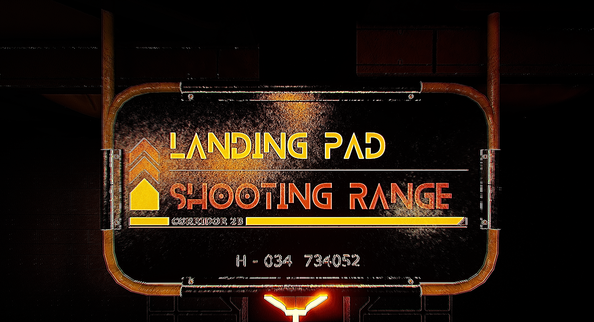

DEVLOG
Here I summarize all the key achivements for a specific month of development.
APRIL 2024
- Created a minigame task and a framework for future ones
- Created the general idea for the game
- Refined the in-game menus

MAY 2024
- Refined the moon base map
- Added the framework for FPS gameplay
- Made a custom VHS sytled shader for the game.
- Made the player HUD 3D
- Refined the in-game menus

JUNE 2024
- Added a launch sequnce intro mission, which is likely to be unused as of writing this.
- Made the first FPS animations
- Refined the in-game menus

JULY 2024
- Tied weapon attributes such as weapon spread, accuracy, and range to the players current combat level. This includes a leveling system with diffrent sublevels.
- Added a relatively in-depth space combat system for the "Interception" core gamemode.
- Created a basic inventory and armor mechanic.
- Heavily refined the Houston Launchsite Map, that is now likely to be unused as of writing this.
- Added a variety of special weapons, like grenades and throwing knives.
- Created a few cutscenes and lore tapes.
- Reverted all UI elements back to a flat, 2D HUD
- Refined the in-game menus

AUGUST 2024
- Added basic ground troop soldier AI features such as patrolling and shooting
- Created a dynamic armor system where the player has a plate of armor per body region. If any damage is taken in that area after the plate breaks, damage will be applied to their actual health. Amount of damage is also applied according to the body segment damaged.
- Added the framework for 3 player classes. (Assassin, Commando, Cybersoldier). Framework as in modified attributes and stats.
- Added a TON of detail to the GDD, which has reached a peak of over 4,000 words. Actual story and lore are now beginning to take shape, as well as a much larger scope for the game.
- Refined the in game-menus
SEPTEMBER 2024
- Made this website (instead of working on the game ik)
- Added a fully functioning save/load system, along with the ability to create different save slots.
- Added 3 Cybersoldier Hacks. This is a specical mechanic unique to the Cybersoldier class.
- Added 2 new types of enemy spacecraft, along with adding 4 types of Starship upgrades that consists of new mechanics and weapons, along with a solid progression system.
- Started work on a new map that will be designed specifically for the new scope of the game. It's located on the frozen polar ice caps of Mars, where a Soviet labratory is suspected of doing experiments on frozen alien lifeforms. Most of the map will be designed using modular parts.
- Continued to polish the FPS gameplay
- Refined the in game-menus

OCTOBER 2024
- Added a cool warping sequence that teleports you to the target planet or moon.
- Added a 3D interactive landing menu
- Added realistic atmospheres to the appropriate planetary bodies
- Started work on the Basic Training level (The Tutorial).
- Reworked the way missions are handled.
- Completely redesigned the HUD and general style of UI elements in the game
- Added semi-smart NPC's with their own dialog, backstory, and ranking.
- Continued to work on this website a little bit

NOVEMBER 2024
- Compltely finished the Basic Training Level (tutorial)
- Created Xavier, an 'advanced' NPC that follows curves, reacts with other NPCs (glitches them out), opens doors, reacts with the player (sort of), and teaches the player the basics of combat 